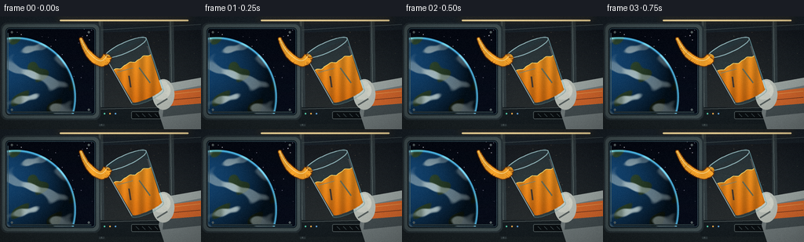
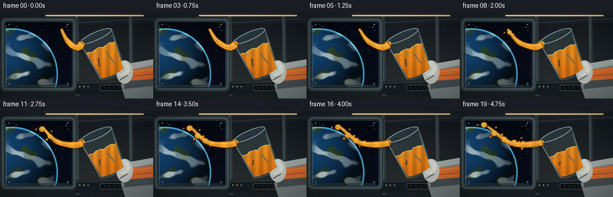
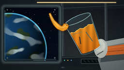
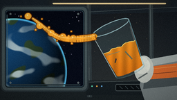
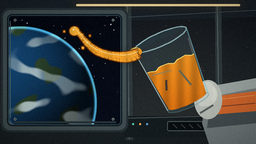
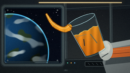

CODING AGENTS AS PIXEL WORLD MODELS
traex/DeepSeek-V4.1-Flash · mechanics_0007
点击播放 · 原生 RGB 像素
逐轮保存的候选
回放视频、检查图与代码变化。
每份候选均可单独播放。实际图片检查记录在下方工具轨迹中。
候选 01播放与检查图
点击播放 · 原生 RGB 像素

展开代码变化
--- 上一保存版本
+++ 本次保存版本
@@ -0,0 +1,514 @@
+from __future__ import annotations
+
+import math
+from pathlib import Path
+
+import numpy as np
+from PIL import Image, ImageDraw, ImageFilter
+
+import artifact_io
+
+
+W, H = 256, 144
+S = 4
+SW, SH = W * S, H * S
+N, FPS = 20, 4.0
+CASE_DIR = Path(__file__).resolve().parent
+
+
+def pxy(x: float, y: float) -> tuple[int, int]:
+ return int(round(x * S)), int(round(y * S))
+
+
+def box(x0: float, y0: float, x1: float, y1: float) -> tuple[int, int, int, int]:
+ return pxy(x0, y0) + pxy(x1, y1)
+
+
+def polygon(points: np.ndarray | list[tuple[float, float]]) -> list[tuple[int, int]]:
+ return [pxy(float(x), float(y)) for x, y in points]
+
+
+def smoothstep(edge0: float, edge1: float, value: np.ndarray) -> np.ndarray:
+ x = np.clip((value - edge0) / (edge1 - edge0), 0.0, 1.0)
+ return x * x * (3.0 - 2.0 * x)
+
+
+def composite(base: Image.Image, overlay: Image.Image) -> Image.Image:
+ return Image.alpha_composite(base.convert("RGBA"), overlay).convert("RGB")
+
+
+def background(t: float) -> Image.Image:
+ yy = np.linspace(0.0, 1.0, SH, dtype=np.float32)[:, None, None]
+ xx = np.linspace(0.0, 1.0, SW, dtype=np.float32)[None, :, None]
+ top = np.array([12, 18, 26], dtype=np.float32)
+ bottom = np.array([35, 43, 47], dtype=np.float32)
+ base = np.broadcast_to(top * (1.0 - yy) + bottom * yy, (SH, SW, 3)).copy()
+ base += (1.0 - xx) * np.array([4.0, 1.0, -1.0], dtype=np.float32)
+ base += np.exp(-((xx - 0.73) ** 2) / 0.08) * np.array([6.0, 4.0, 1.0], dtype=np.float32)
+ image = Image.fromarray(np.clip(base, 0, 255).astype(np.uint8), "RGB")
+ draw = ImageDraw.Draw(image)
+
+ # Station wall panels and ribs.
+ draw.polygon(polygon([(0, 0), (256, 0), (256, 17), (0, 24)]), fill=(23, 31, 38))
+ draw.polygon(polygon([(0, 123), (256, 118), (256, 144), (0, 144)]), fill=(24, 31, 34))
+ for x in (128, 218):
+ draw.polygon(
+ polygon([(x - 3, 5), (x + 3, 5), (x + 5, 140), (x - 2, 140)]),
+ fill=(44, 54, 58),
+ )
+ draw.line(polygon([(x - 1, 6), (x + 1, 139)]), fill=(83, 96, 96), width=S)
+ draw.line(polygon([(127, 17), (256, 10)]), fill=(61, 73, 76), width=S)
+ draw.line(polygon([(130, 121), (256, 117)]), fill=(9, 14, 17), width=2 * S)
+
+ # Ceiling light, kept small so it supports rather than competes with the liquid.
+ glow = Image.new("RGBA", (SW, SH), (0, 0, 0, 0))
+ gd = ImageDraw.Draw(glow)
+ gd.rounded_rectangle(box(70, 3, 246, 7), radius=2 * S, fill=(255, 194, 108, 150))
+ glow = glow.filter(ImageFilter.GaussianBlur(5 * S))
+ image = composite(image, glow)
+ draw = ImageDraw.Draw(image)
+ draw.rounded_rectangle(box(76, 4, 240, 6), radius=S, fill=(255, 220, 155))
+
+ # Lower equipment rail.
+ draw.rounded_rectangle(box(124, 116, 252, 137), radius=3 * S, fill=(20, 27, 31))
+ draw.line(polygon([(126, 118), (250, 115)]), fill=(76, 86, 87), width=S)
+ for i, color in enumerate(((88, 217, 178), (255, 177, 74), (99, 172, 231))):
+ draw.ellipse(box(132 + i * 7, 123, 134 + i * 7, 125), fill=color)
+ draw.rounded_rectangle(box(167, 121, 223, 131), radius=2 * S, fill=(9, 13, 16), outline=(72, 83, 85), width=S)
+ for x in range(173, 217, 8):
+ draw.line(polygon([(x, 124), (x + 4, 128)]), fill=(56, 68, 71), width=S)
+
+ # Slow floating dust catches the cabin light.
+ dust = Image.new("RGBA", (SW, SH), (0, 0, 0, 0))
+ dd = ImageDraw.Draw(dust)
+ rng = np.random.default_rng(901)
+ for i in range(22):
+ x = 126 + rng.random() * 126 + 2.0 * math.sin(0.8 * t + i)
+ y = 13 + rng.random() * 104 + 1.2 * math.cos(0.5 * t + i * 1.7)
+ radius = 0.25 + rng.random() * 0.45
+ alpha = int(45 + rng.random() * 55)
+ dd.ellipse(box(x - radius, y - radius, x + radius, y + radius), fill=(255, 220, 164, alpha))
+ image = composite(image, dust.filter(ImageFilter.GaussianBlur(S * 0.35)))
+ return image
+
+
+def window_and_earth(t: float) -> Image.Image:
+ layer = Image.new("RGBA", (SW, SH), (0, 0, 0, 0))
+ draw = ImageDraw.Draw(layer)
+
+ draw.rounded_rectangle(box(1, 8, 128, 132), radius=8 * S, fill=(36, 46, 51, 255))
+ draw.rounded_rectangle(box(3, 10, 126, 130), radius=7 * S, fill=(63, 77, 80, 255))
+ draw.rounded_rectangle(box(7, 14, 122, 126), radius=5 * S, fill=(3, 7, 13, 255))
+ draw.rounded_rectangle(box(7, 14, 122, 126), radius=5 * S, outline=(12, 20, 27, 255), width=2 * S)
+
+ window_mask = Image.new("L", (SW, SH), 0)
+ ImageDraw.Draw(window_mask).rounded_rectangle(box(8, 15, 121, 125), radius=4 * S, fill=255)
+
+ space = np.zeros((SH, SW, 4), dtype=np.uint8)
+ yy = np.linspace(0.0, 1.0, SH, dtype=np.float32)[:, None]
+ space[..., 0] = np.clip(4 + 3 * yy, 0, 255).astype(np.uint8)
+ space[..., 1] = np.clip(7 + 5 * yy, 0, 255).astype(np.uint8)
+ space[..., 2] = np.clip(15 + 10 * yy, 0, 255).astype(np.uint8)
+ space[..., 3] = 255
+ space_img = Image.fromarray(space, "RGBA")
+ space_img.putalpha(window_mask)
+ layer = Image.alpha_composite(layer, space_img)
+ draw = ImageDraw.Draw(layer)
+
+ rng = np.random.default_rng(441)
+ for _ in range(45):
+ x = 9 + rng.random() * 111
+ y = 16 + rng.random() * 76
+ b = int(80 + rng.random() * 150)
+ radius = 0.22 + rng.random() * 0.34
+ draw.ellipse(box(x - radius, y - radius, x + radius, y + radius), fill=(b, b, min(255, b + 22), 220))
+
+ # Earth is rendered on a sphere with ocean, cloud bands, and a cool atmospheric rim.
+ Y, X = np.mgrid[0:SH, 0:SW].astype(np.float32)
+ X /= S
+ Y /= S
+ cx, cy, radius = 20.0, 103.0, 77.0
+ dx = (X - cx) / radius
+ dy = (Y - cy) / radius
+ rr = dx * dx + dy * dy
+ inside = rr <= 1.0
+ nz = np.sqrt(np.clip(1.0 - rr, 0.0, 1.0))
+ light = np.clip(-0.52 * dx - 0.63 * dy + 0.58 * nz, 0.0, 1.0)
+ shade = 0.20 + 0.93 * light
+
+ land_noise = (
+ np.sin(9.2 * dx + 2.1 * np.sin(5.3 * dy + 0.4))
+ + 0.72 * np.cos(12.4 * dy - 3.2 * dx)
+ + 0.32 * np.sin(18.0 * (dx + dy))
+ )
+ land = smoothstep(0.78, 1.22, land_noise)
+ cloud_noise = (
+ np.sin(7.0 * dx + 2.8 * np.sin(8.0 * dy))
+ + 0.58 * np.cos(14.0 * dy - 4.0 * dx)
+ + 0.25 * np.sin(23.0 * (dx - 0.2 * dy))
+ )
+ clouds = smoothstep(0.44, 1.20, cloud_noise) * (0.48 + 0.52 * nz)
+ cloud_shift = smoothstep(0.40, 0.92, np.sin(6.4 * dx + 1.4 * t))
+ clouds *= 0.60 + 0.40 * cloud_shift
+
+ ocean = np.stack(
+ [
+ np.full_like(dx, 19.0),
+ np.full_like(dx, 72.0),
+ np.full_like(dx, 122.0),
+ ],
+ axis=-1,
+ )
+ ocean *= shade[..., None]
+ ground = np.stack(
+ [
+ np.full_like(dx, 62.0),
+ np.full_like(dx, 96.0),
+ np.full_like(dx, 61.0),
+ ],
+ axis=-1,
+ )
+ ground *= shade[..., None] * 0.86
+ earth = ocean * (1.0 - land[..., None]) + ground * land[..., None]
+ cloud_color = np.array([204.0, 225.0, 226.0], dtype=np.float32)[None, None, :]
+ earth = earth * (1.0 - 0.88 * clouds[..., None]) + cloud_color * (0.88 * clouds[..., None])
+ earth *= (0.78 + 0.22 * np.clip(nz, 0.0, 1.0))[..., None]
+
+ rim = np.exp(-((rr - 0.965) / 0.035) ** 2)
+ rim_color = np.array([77.0, 176.0, 217.0], dtype=np.float32)[None, None, :]
+ earth = earth + rim[..., None] * rim_color * 0.95
+ earth[..., 0] = np.clip(earth[..., 0], 0, 255)
+ earth[..., 1] = np.clip(earth[..., 1], 0, 255)
+ earth[..., 2] = np.clip(earth[..., 2], 0, 255)
+ alpha = (inside * 255).astype(np.uint8)
+ earth_img = Image.fromarray(np.dstack([earth, alpha]).astype(np.uint8), "RGBA")
+ earth_img.putalpha(Image.fromarray(np.minimum(alpha, np.asarray(window_mask)), "L"))
+ layer = Image.alpha_composite(layer, earth_img)
+
+ # Window edge glow and structural gaskets.
+ draw = ImageDraw.Draw(layer)
+ draw.rounded_rectangle(box(8, 15, 121, 125), radius=4 * S, outline=(72, 117, 132, 95), width=S)
+ draw.line(polygon([(10, 21), (10, 118)]), fill=(133, 190, 198, 110), width=S)
+ draw.line(polygon([(14, 122), (116, 122)]), fill=(39, 55, 61, 210), width=2 * S)
+ for x, y in ((15, 20), (113, 20), (15, 119), (113, 119)):
+ draw.ellipse(box(x - 1.2, y - 1.2, x + 1.2, y + 1.2), fill=(127, 140, 139, 255))
+ draw.ellipse(box(x - 0.45, y - 0.45, x + 0.45, y + 0.45), fill=(27, 36, 39, 255))
+ return layer
+
+
+THETA = math.radians(24.0)
+AXIS = np.array([math.sin(THETA), math.cos(THETA)], dtype=np.float32)
+PERP = np.array([math.cos(THETA), -math.sin(THETA)], dtype=np.float32)
+TOP = np.array([160.0, 39.5], dtype=np.float32)
+HEIGHT = 69.0
+TOP_HW = 28.5
+BOTTOM_HW = 22.0
+
+
+def local_point(u: float, v: float) -> np.ndarray:
+ return TOP + PERP * u + AXIS * v
+
+
+def ellipse_local(center_u: float, center_v: float, ru: float, rv: float, count: int = 64) -> list[np.ndarray]:
+ angles = np.linspace(0.0, math.tau, count, endpoint=False)
+ return [local_point(center_u + ru * math.cos(a), center_v + rv * math.sin(a)) for a in angles]
+
+
+def make_glass_masks() -> tuple[Image.Image, Image.Image, Image.Image]:
+ body = Image.new("L", (SW, SH), 0)
+ bd = ImageDraw.Draw(body)
+ top_pts = ellipse_local(0.0, 0.0, TOP_HW, 6.6)
+ bottom_center = local_point(0.0, HEIGHT)
+ bd.polygon(
+ polygon(
+ [
+ local_point(-TOP_HW, 0.0),
+ local_point(TOP_HW, 0.0),
+ local_point(BOTTOM_HW, HEIGHT),
+ local_point(-BOTTOM_HW, HEIGHT),
+ ]
+ ),
+ fill=255,
+ )
+ bd.polygon(polygon(top_pts), fill=255)
+ bd.polygon(polygon(ellipse_local(0.0, HEIGHT, BOTTOM_HW, 5.2)), fill=255)
+
+ rim = Image.new("L", (SW, SH), 0)
+ rd = ImageDraw.Draw(rim)
+ rd.polygon(polygon(top_pts), fill=255)
+
+ # The back half of the rim, useful for tinting without obscuring the pour.
+ back_rim = Image.new("L", (SW, SH), 0)
+ ImageDraw.Draw(back_rim).polygon(
+ polygon(
+ [
+ local_point(-TOP_HW, 0.0),
+ local_point(TOP_HW, 0.0),
+ local_point(TOP_HW * 0.93, -5.2),
+ local_point(-TOP_HW * 0.93, -5.2),
+ ]
+ ),
+ fill=180,
+ )
+ return body, rim, back_rim
+
+
+GLASS_BODY, GLASS_RIM, GLASS_BACK_RIM = make_glass_masks()
+
+
+def draw_glove(image: Image.Image) -> Image.Image:
+ layer = Image.new("RGBA", (SW, SH), (0, 0, 0, 0))
+ draw = ImageDraw.Draw(layer)
+
+ # Sleeve enters from the right edge and catches a thin warm edge light.
+ draw.polygon(
+ polygon([(211, 86), (256, 78), (256, 144), (209, 144), (202, 123), (205, 105)]),
+ fill=(116, 126, 127, 255),
+ )
+ draw.polygon(
+ polygon([(211, 86), (256, 78), (256, 88), (214, 96), (207, 108)]),
+ fill=(161, 171, 168, 255),
+ )
+ draw.polygon(
+ polygon([(209, 111), (256, 106), (256, 123), (207, 128)]),
+ fill=(68, 78, 81, 255),
+ )
+ draw.polygon(
+ polygon([(208, 97), (256, 91), (256, 111), (207, 115)]),
+ fill=(220, 104, 43, 255),
+ )
+ draw.line(polygon([(211, 100), (255, 95)]), fill=(255, 159, 77, 230), width=S)
+ draw.line(polygon([(211, 107), (255, 103)]), fill=(127, 55, 28, 220), width=S)
+
+ # Gloved palm and curled fingers behind the glass.
+ draw.ellipse(box(194, 80, 222, 119), fill=(190, 196, 188, 255))
+ draw.ellipse(box(198, 84, 217, 105), fill=(220, 223, 211, 255))
+ for i, (y0, y1) in enumerate(((82, 90), (90, 98), (98, 106))):
+ x0 = 195 + i * 1.5
+ draw.rounded_rectangle(box(x0, y0, 213, y1), radius=4 * S, fill=(211, 215, 205, 255))
+ draw.line(polygon([(x0 + 4, y0 + 2), (207, y0 + 3)]), fill=(246, 247, 232, 210), width=S)
+ draw.line(polygon([(200, 113), (213, 105)]), fill=(107, 118, 116, 190), width=2 * S)
+ return composite(image, layer)
+
+
+def draw_glass_back() -> Image.Image:
+ layer = Image.new("RGBA", (SW, SH), (0, 0, 0, 0))
+ draw = ImageDraw.Draw(layer)
+
+ # A faint cool volume gives the tumbler readable glass without hiding the cabin.
+ tint = Image.new("RGBA", (SW, SH), (142, 198, 207, 30))
+ layer = Image.composite(tint, layer, GLASS_BODY)
+ draw = ImageDraw.Draw(layer)
+
+ back_tint = Image.new("RGBA", (SW, SH), (54, 100, 111, 74))
+ layer = Image.composite(back_tint, layer, GLASS_BACK_RIM)
+ draw = ImageDraw.Draw(layer)
+
+ top_pts = ellipse_local(0.0, 0.0, TOP_HW, 6.6)
+ bottom_pts = ellipse_local(0.0, HEIGHT, BOTTOM_HW, 5.2)
+ draw.line(polygon(top_pts + [top_pts[0]]), fill=(179, 226, 231, 190), width=int(1.35 * S), joint="curve")
+ draw.line(polygon(bottom_pts + [bottom_pts[0]]), fill=(96, 151, 158, 125), width=S, joint="curve")
+
+ left_edge = [local_point(-TOP_HW, 1.0), local_point(-BOTTOM_HW, HEIGHT - 1.0)]
+ right_edge = [local_point(TOP_HW, 1.0), local_point(BOTTOM_HW, HEIGHT - 1.0)]
+ draw.line(polygon(left_edge), fill=(218, 244, 242, 165), width=int(1.15 * S))
+ draw.line(polygon(right_edge), fill=(126, 196, 207, 160), width=int(1.2 * S))
+ draw.line(polygon([local_point(TOP_HW - 2.0, 10), local_point(BOTTOM_HW - 2.5, 61)]), fill=(238, 251, 246, 58), width=2 * S)
+ return layer
+
+
+def draw_juice(t: float) -> Image.Image:
+ layer = Image.new("RGBA", (SW, SH), (0, 0, 0, 0))
+ level = 20.5 + 9.5 * t
+ half_width = TOP_HW - (TOP_HW - BOTTOM_HW) * level / HEIGHT
+ phase = 1.5 * math.sin(0.8 * t)
+ top_points: list[np.ndarray] = []
+ for u in np.linspace(-half_width + 1.0, half_width - 1.0, 36):
+ v = level + 1.1 * math.sin(0.30 * u + phase) + 0.45 * math.sin(0.65 * u - 0.8 * t)
+ top_points.append(local_point(float(u), float(v)))
+
+ juice_polygon = top_points + [
+ local_point(BOTTOM_HW - 1.7, HEIGHT - 2.0),
+ local_point(-BOTTOM_HW + 1.7, HEIGHT - 2.0),
+ ]
+ juice_mask = Image.new("L", (SW, SH), 0)
+ jd = ImageDraw.Draw(juice_mask)
+ jd.polygon(polygon(juice_polygon), fill=255)
+ jd.polygon(polygon(ellipse_local(0.0, HEIGHT - 2.0, BOTTOM_HW - 1.5, 4.0)), fill=255)
+ juice_mask = Image.fromarray(np.minimum(np.asarray(juice_mask), np.asarray(GLASS_BODY)), "L")
+
+ Y, X = np.mgrid[0:SH, 0:SW].astype(np.float32)
+ Y /= SH
+ amber_top = np.array([255.0, 178.0, 47.0])
+ amber_bottom = np.array([222.0, 96.0, 7.0])
+ amber = amber_top[None, None, :] * (1.0 - Y[..., None]) + amber_bottom[None, None, :] * Y[..., None]
+ # Warm translucency makes the lower glass glow instead of reading as opaque plastic.
+ amber *= (0.90 + 0.10 * np.sin(X * 0.11 + 0.8))[..., None]
+ rgba = np.dstack([np.clip(amber, 0, 255), np.full((SH, SW), 225, dtype=np.float32)]).astype(np.uint8)
+ juice_img = Image.fromarray(rgba, "RGBA")
+ juice_img.putalpha(juice_mask)
+ layer = Image.alpha_composite(layer, juice_img)
+ draw = ImageDraw.Draw(layer)
+
+ # Liquid meniscus and the bright edge where juice meets the inner glass.
+ draw.line(polygon(top_points), fill=(255, 218, 102, 235), width=int(1.2 * S), joint="curve")
+ draw.line(polygon([local_point(-half_width + 4.0, level + 4.0), local_point(-2.0, level + 7.0)]), fill=(255, 236, 165, 100), width=S)
+ draw.line(polygon([local_point(5.0, level + 10.0), local_point(10.0, HEIGHT - 15.0)]), fill=(255, 229, 129, 70), width=2 * S)
+ draw.line(polygon([local_point(-11.0, level + 14.0), local_point(-15.0, HEIGHT - 20.0)]), fill=(109, 43, 2, 75), width=2 * S)
+
+ # A rounded liquid mass clings to the pouring lip.
+ lip = local_point(-TOP_HW + 1.4, 1.4)
+ bulge_r = 4.8 + 1.2 * math.sin(math.pi * t)
+ draw.ellipse(box(lip[0] - bulge_r, lip[1] - bulge_r * 0.76, lip[0] + bulge_r, lip[1] + bulge_r * 0.76), fill=(250, 157, 27, 245))
+ draw.arc(box(lip[0] - bulge_r + 1.0, lip[1] - bulge_r * 0.7, lip[0] + bulge_r - 1.0, lip[1] + bulge_r * 0.7), 195, 320, fill=(255, 230, 132, 190), width=S)
+ return layer
+
+
+def stream_geometry(t: float) -> tuple[np.ndarray, np.ndarray]:
+ lip = local_point(-TOP_HW + 1.6, 2.0)
+ length = 34.0 + 56.0 * t
+ s = np.linspace(0.0, 1.0, 180)
+ x = lip[0] - length * s + 1.25 * np.sin(7.0 * s + 2.1 * t)
+ y = (
+ lip[1]
+ + 9.0 * np.sin(1.14 * math.pi * s)
+ - 21.0 * np.power(s, 1.72)
+ + 1.4 * np.sin(8.0 * s + 2.7 * t)
+ )
+ radii = (1.35 + 4.4 * np.power(1.0 - s, 0.58)) * (1.0 - 0.14 * t)
+ radii += 0.35 * np.sin(14.0 * s - 1.8 * t) * (1.0 - s)
+ return np.stack([x, y], axis=1), radii
+
+
+BREAK_NODES = [
+ (0.905, 0.29),
+ (0.745, 0.43),
+ (0.585, 0.56),
+ (0.430, 0.69),
+ (0.290, 0.82),
+]
+
+
+def draw_stream(t: float) -> tuple[Image.Image, Image.Image]:
+ points, radii = stream_geometry(t)
+ s_values = np.linspace(0.0, 1.0, len(points))
+ gap_halfwidth = np.zeros_like(s_values)
+ active_nodes: list[tuple[int, float, float]] = []
+ for index, (node_s, start_t) in enumerate(BREAK_NODES):
+ if t > start_t:
+ progress = min(1.0, (t - start_t) / 0.20)
+ width = 0.010 + 0.026 * progress
+ gap_halfwidth = np.maximum(gap_halfwidth, width * np.exp(-((s_values - node_s) / 0.014) ** 2))
+ active_nodes.append((index, node_s, progress))
+
+ mask = Image.new("L", (SW, SH), 0)
+ md = ImageDraw.Draw(mask)
+ for i in range(len(points) - 1):
+ if gap_halfwidth[i] > 0.45 or gap_halfwidth[i + 1] > 0.45:
+ continue
+ p0 = pxy(float(points[i, 0]), float(points[i, 1]))
+ p1 = pxy(float(points[i + 1, 0]), float(points[i + 1, 1]))
+ width = max(2, int(round((radii[i] + radii[i + 1]) * S)))
+ md.line([p0, p1], fill=255, width=width)
+
+ # Keep the leading bulb soft and rounded when the ribbon is still continuous.
+ if t < BREAK_NODES[0][1]:
+ tip = points[-1]
+ r = radii[-1] * 1.25
+ md.ellipse(box(tip[0] - r, tip[1] - r, tip[0] + r, tip[1] + r), fill=255)
+
+ droplet_info: list[tuple[float, float, float]] = []
+ for index, node_s, progress in active_nodes:
+ node_idx = min(len(points) - 1, int(round(node_s * (len(points) - 1))))
+ detach = points[node_idx].copy()
+ age = max(0.0, t - BREAK_NODES[index][1])
+ drift = np.array([-21.0 * age, -13.0 * age], dtype=np.float32)
+ wobble = np.array([0.9 * math.sin(17.0 * age + index), 0.65 * math.cos(13.0 * age + index)])
+ center = detach + drift + wobble
+ radius = 1.55 + 3.2 * min(1.0, progress)
+ md.ellipse(box(center[0] - radius, center[1] - radius * 0.92, center[0] + radius, center[1] + radius * 0.92), fill=255)
+ droplet_info.append((float(center[0]), float(center[1]), float(radius)))
+
+ if progress > 0.20:
+ for k in range(2):
+ angle = index * 1.9 + k * 2.6 + 0.5
+ distance = 4.5 + 4.0 * progress + k * 1.7
+ sx = center[0] + distance * math.cos(angle)
+ sy = center[1] + distance * math.sin(angle)
+ rr = 0.65 + 0.45 * (k == 0) + 0.3 * progress
+ md.ellipse(box(sx - rr, sy - rr, sx + rr, sy + rr), fill=255)
+ droplet_info.append((float(sx), float(sy), float(rr)))
+
+ mask = mask.filter(ImageFilter.GaussianBlur(0.8))
+ glow_mask = mask.filter(ImageFilter.GaussianBlur(4.0 * S))
+ glow = Image.new("RGBA", (SW, SH), (0, 0, 0, 0))
+ glow.putalpha(glow_mask.point(lambda v: int(v * 0.24)))
+ glow = Image.composite(Image.new("RGBA", (SW, SH), (255, 137, 19, 255)), glow, glow.getchannel("A"))
+
+ outline_mask = mask.filter(ImageFilter.MaxFilter(7))
+ outline = Image.new("RGBA", (SW, SH), (0, 0, 0, 0))
+ outline_color = Image.new("RGBA", (SW, SH), (102, 42, 3, 255))
+ outline_color.putalpha(outline_mask.point(lambda v: int(v * 0.92)))
+
+ Y, X = np.mgrid[0:SH, 0:SW].astype(np.float32)
+ Y /= SH
+ top_color = np.array([255.0, 190.0, 59.0])
+ bottom_color = np.array([246.0, 125.0, 12.0])
+ amber = top_color[None, None, :] * (1.0 - Y[..., None]) + bottom_color[None, None, :] * Y[..., None]
+ amber *= (0.95 + 0.05 * np.sin(X * 0.08 + 1.7))[..., None]
+ fill_color = Image.fromarray(np.dstack([amber, np.full((SH, SW), 255.0)]).astype(np.uint8), "RGBA")
+ fill_color.putalpha(mask)
+
+ # Specular ribbon line and small bead highlights.
+ highlights = Image.new("RGBA", (SW, SH), (0, 0, 0, 0))
+ hd = ImageDraw.Draw(highlights)
+ for i in range(0, len(points) - 1, 2):
+ if gap_halfwidth[i] > 0.45:
+ continue
+ p = points[i]
+ r = max(0.7, radii[i] * 0.42)
+ q = p + np.array([-0.15, -r], dtype=np.float32)
+ hd.ellipse(box(q[0] - 0.45, q[1] - 0.32, q[0] + 0.45, q[1] + 0.32), fill=(255, 239, 176, 155))
+ for x, y, radius in droplet_info:
+ if radius > 1.1:
+ hd.ellipse(box(x - radius * 0.36, y - radius * 0.44, x - radius * 0.02, y - radius * 0.12), fill=(255, 244, 190, 225))
+
+ stream = Image.alpha_composite(outline_color, fill_color)
+ stream = Image.alpha_composite(stream, highlights)
+ return glow, stream
+
+
+def render(index: int) -> np.ndarray:
+ t = index / (N - 1)
+ image = background(t)
+ image = composite(image, window_and_earth(t))
+ image = draw_glove(image)
+ image = composite(image, draw_glass_back())
+ image = composite(image, draw_juice(t))
+ glow, stream = draw_stream(t)
+ image = composite(image, glow)
+ image = composite(image, stream)
+ image = image.resize((W, H), Image.Resampling.LANCZOS)
+
+ # Soft overall lift and vignette keep the cabin readable without flattening the black window.
+ arr = np.asarray(image).astype(np.float32) / 255.0
+ yy, xx = np.mgrid[0:H, 0:W].astype(np.float32)
+ nx = (xx - W * 0.5) / (W * 0.58)
+ ny = (yy - H * 0.48) / (H * 0.64)
+ vignette = np.clip(1.0 - 0.22 * (nx * nx + ny * ny), 0.72, 1.0)
+ arr *= vignette[..., None]
+ arr = arr ** 0.96
+ rng = np.random.default_rng(1000 + index)
+ grain = rng.normal(0.0, 1.45, (H, W, 1)).astype(np.float32)
+ arr = np.clip(arr * 255.0 + grain, 0, 255)
+ return arr.astype(np.uint8)
+
+
+def main() -> None:
+ frames = np.stack([render(index) for index in range(N)], axis=0)
+ artifact_io.save(frames, CASE_DIR)
+ print(f"saved {frames.shape} RGB frames to {CASE_DIR}")
+
+
+if __name__ == "__main__":
+ main()
候选 02播放与检查图
点击播放 · 原生 RGB 像素


展开代码变化
--- 上一保存版本
+++ 本次保存版本
@@ -3,6 +3,7 @@
import math
from pathlib import Path
+import cv2
import numpy as np
from PIL import Image, ImageDraw, ImageFilter
@@ -45,7 +46,7 @@
base = np.broadcast_to(top * (1.0 - yy) + bottom * yy, (SH, SW, 3)).copy()
base += (1.0 - xx) * np.array([4.0, 1.0, -1.0], dtype=np.float32)
base += np.exp(-((xx - 0.73) ** 2) / 0.08) * np.array([6.0, 4.0, 1.0], dtype=np.float32)
- image = Image.fromarray(np.clip(base, 0, 255).astype(np.uint8), "RGB")
+ image = Image.fromarray(np.clip(base, 0, 255).astype(np.uint8))
draw = ImageDraw.Draw(image)
# Station wall panels and ribs.
@@ -110,7 +111,7 @@
space[..., 1] = np.clip(7 + 5 * yy, 0, 255).astype(np.uint8)
space[..., 2] = np.clip(15 + 10 * yy, 0, 255).astype(np.uint8)
space[..., 3] = 255
- space_img = Image.fromarray(space, "RGBA")
+ space_img = Image.fromarray(space)
space_img.putalpha(window_mask)
layer = Image.alpha_composite(layer, space_img)
draw = ImageDraw.Draw(layer)
@@ -181,8 +182,8 @@
earth[..., 1] = np.clip(earth[..., 1], 0, 255)
earth[..., 2] = np.clip(earth[..., 2], 0, 255)
alpha = (inside * 255).astype(np.uint8)
- earth_img = Image.fromarray(np.dstack([earth, alpha]).astype(np.uint8), "RGBA")
- earth_img.putalpha(Image.fromarray(np.minimum(alpha, np.asarray(window_mask)), "L"))
+ earth_img = Image.fromarray(np.dstack([earth, alpha]).astype(np.uint8))
+ earth_img.putalpha(Image.fromarray(np.minimum(alpha, np.asarray(window_mask))))
layer = Image.alpha_composite(layer, earth_img)
# Window edge glow and structural gaskets.
@@ -335,7 +336,7 @@
jd = ImageDraw.Draw(juice_mask)
jd.polygon(polygon(juice_polygon), fill=255)
jd.polygon(polygon(ellipse_local(0.0, HEIGHT - 2.0, BOTTOM_HW - 1.5, 4.0)), fill=255)
- juice_mask = Image.fromarray(np.minimum(np.asarray(juice_mask), np.asarray(GLASS_BODY)), "L")
+ juice_mask = Image.fromarray(np.minimum(np.asarray(juice_mask), np.asarray(GLASS_BODY)))
Y, X = np.mgrid[0:SH, 0:SW].astype(np.float32)
Y /= SH
@@ -345,7 +346,7 @@
# Warm translucency makes the lower glass glow instead of reading as opaque plastic.
amber *= (0.90 + 0.10 * np.sin(X * 0.11 + 0.8))[..., None]
rgba = np.dstack([np.clip(amber, 0, 255), np.full((SH, SW), 225, dtype=np.float32)]).astype(np.uint8)
- juice_img = Image.fromarray(rgba, "RGBA")
+ juice_img = Image.fromarray(rgba)
juice_img.putalpha(juice_mask)
layer = Image.alpha_composite(layer, juice_img)
draw = ImageDraw.Draw(layer)
@@ -456,7 +457,7 @@
bottom_color = np.array([246.0, 125.0, 12.0])
amber = top_color[None, None, :] * (1.0 - Y[..., None]) + bottom_color[None, None, :] * Y[..., None]
amber *= (0.95 + 0.05 * np.sin(X * 0.08 + 1.7))[..., None]
- fill_color = Image.fromarray(np.dstack([amber, np.full((SH, SW), 255.0)]).astype(np.uint8), "RGBA")
+ fill_color = Image.fromarray(np.dstack([amber, np.full((SH, SW), 255.0)]).astype(np.uint8))
fill_color.putalpha(mask)
# Specular ribbon line and small bead highlights.
@@ -507,6 +508,17 @@
def main() -> None:
frames = np.stack([render(index) for index in range(N)], axis=0)
artifact_io.save(frames, CASE_DIR)
+ writer = cv2.VideoWriter(
+ str(CASE_DIR / "output.mp4"),
+ cv2.VideoWriter_fourcc(*"mp4v"),
+ FPS,
+ (W, H),
+ )
+ if not writer.isOpened():
+ raise RuntimeError("could not open MP4 writer")
+ for frame in frames:
+ writer.write(cv2.cvtColor(frame, cv2.COLOR_RGB2BGR))
+ writer.release()
print(f"saved {frames.shape} RGB frames to {CASE_DIR}")
可观测工具轨迹
实际执行的命令与返回图片。
命令 1exit 0
/bin/bash -c "pwd && rg --files -g 'prompt.txt' -g 'GENERATION_RULES.md' -g 'task_spec.json' -g '"'!*.mp4'"' -g '"'!*.webm'"'"
命令 2exit 0
/bin/bash -c "find . -maxdepth 2 -type f | sort | sed -n '1,200p'"
命令 3exit 0
/bin/bash -c 'git status --short'
命令 4exit 0
/bin/bash -c 'cat GENERATION_RULES.md'
命令 5exit 0
/bin/bash -c 'cat prompt.txt'
命令 6exit 0
/bin/bash -c 'cat task_spec.json'
命令 7exit 0
/bin/bash -c "sed -n '1,240p' artifact_io.py"
命令 8exit 0
/bin/bash -c "sed -n '1,240p' player_template.html"
命令 9exit 0
/bin/bash -c "python - <<'PY'
import numpy, PIL
print('numpy', numpy.__version__)
print('PIL', PIL.__version__)
PY"命令 10exit 1
/bin/bash -c 'python generate.py'
命令 11exit 1
/bin/bash -c 'python generate.py'
命令 12exit 1
/bin/bash -c 'python generate.py'
命令 13exit 1
/bin/bash -c 'python generate.py'
命令 14exit 0
/bin/bash -c "python - <<'PY' import generate for i in (0,10,19): g,s=generate.draw_stream(i/19) print(i,g.size,s.size,g.mode,s.mode) PY"
命令 15exit 1
/bin/bash -c 'python generate.py'
命令 16exit 0
/bin/bash -c 'python generate.py'
命令 17exit 1
/bin/bash -c 'which ffmpeg && which magick || which convert'
命令 18exit 0
/bin/bash -c "command -v ffmpeg; command -v avconv; command -v convert; command -v magick; python - <<'PY'
try:
import imageio
print('imageio', imageio.__version__)
except Exception as e: print('no imageio',e)
try:
import cv2
print('cv2',cv2.__version__)
except Exception as e: print('no cv2',e)
PY"命令 19exit 0
/bin/bash -c 'python generate.py'
命令 20exit 0
/bin/bash -c "python - <<'PY'
from pathlib import Path
import json, cv2, numpy as np
from PIL import Image
p=Path('.')
spec=json.loads((p/'task_spec.json').read_text())
frames=np.stack([np.asarray(Image.open(p/'frames'/f'{i:02d}.png').convert('RGB')) for i in range(spec['frames'])])
cap=cv2.VideoCapture(str(p/'output.mp4'))
mp4=[]
while True:
ok, frame=cap.read()
if not ok: break
mp4.append(cv2.cvtColor(frame, cv2.COLOR_BGR2RGB))
cap.release()
print('frames', frames.shape, frames.dtype, 'range', int(frames.min()), int(frames.max()))
print('unique pixel colors/frame', [len(np.unique(f, axis=0)) for f in frames[:5]], '...')
print('frame deltas', [round(float(np.abs(frames[i].astype(int)-frames[i-1].astype(int)).mean()),2) for i in range(1,20)])
print('mp4 frames', len(mp4), 'shape', np.asarray(mp4).shape, 'fps', cap.get(cv2.CAP_PROP_FPS))
print('artifacts', {x.name: x.stat().st_size for x in p.iterdir() if x.name in {'output.mp4','index.html','pixels.npz','inspection.png'}})
PY"命令 21exit 0
/bin/bash -c "python - <<'PY'
from pathlib import Path
import json, cv2, numpy as np
from PIL import Image
p=Path('.')
cap=cv2.VideoCapture(str(p/'output.mp4'))
print('opened',cap.isOpened())
print('fps',cap.get(cv2.CAP_PROP_FPS),'frames',cap.get(cv2.CAP_PROP_FRAME_COUNT),'size',int(cap.get(cv2.CAP_PROP_FRAME_WIDTH)),int(cap.get(cv2.CAP_PROP_FRAME_HEIGHT)))
cap.release()
frames=np.stack([np.asarray(Image.open(p/'frames'/f'{i:02d}.png').convert('RGB')) for i in range(20)])
colors=[len(np.unique(f.reshape(-1,3),axis=0)) for f in frames]
print('unique_colors',min(colors),max(colors))
spec=json.loads((p/'task_spec.json').read_text())
assert frames.shape==(20,144,256,3) and frames.dtype==np.uint8
assert (p/'generate.py').is_file() and (p/'index.html').is_file() and (p/'output.mp4').is_file()
print('required artifacts and frame contract: OK')
PY"视觉工具实际返回图片 1

视觉工具实际返回图片 2

视觉工具实际返回图片 3

视觉工具实际返回图片 4

视觉工具实际返回图片 5

视觉工具实际返回图片 6

保存候选 2 份；完成命令 21 次；可验证图片返回 6 张。原始 API 响应与完整日志保留在本地。